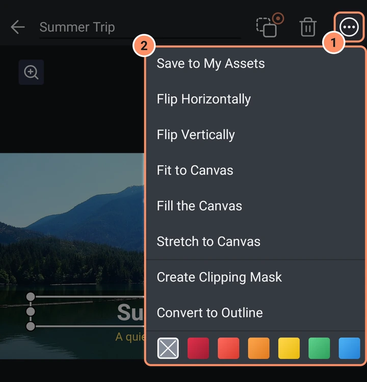
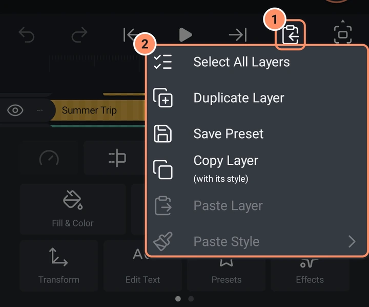
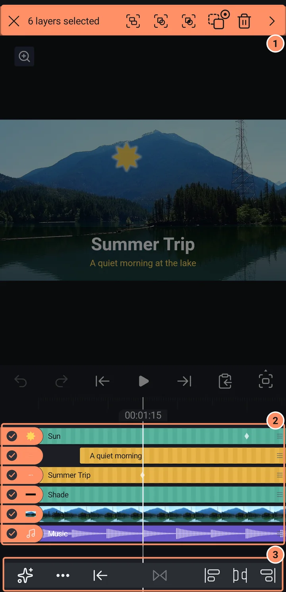
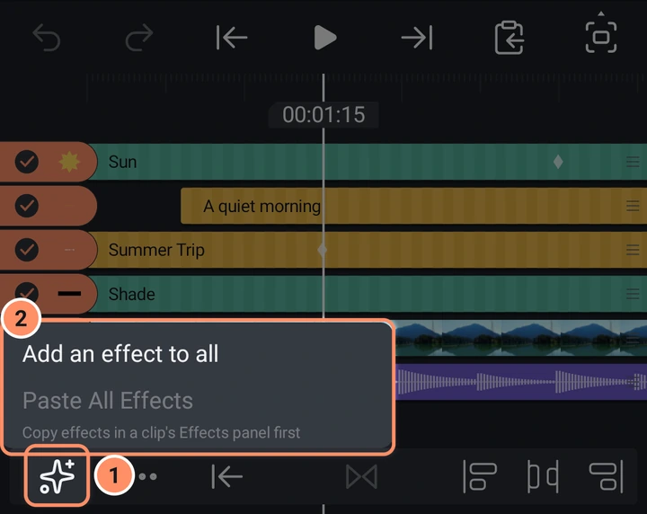
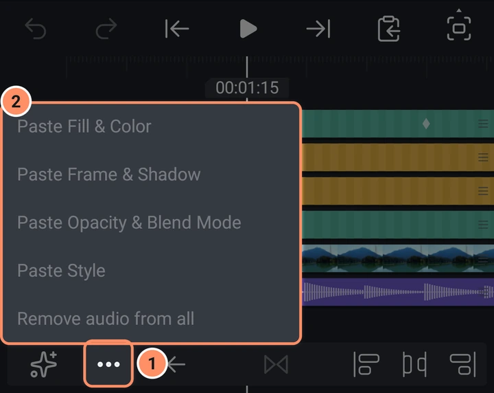
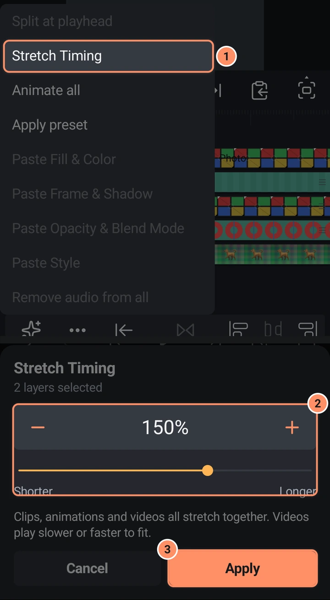

Katman menüleri ve çoklu seçim
Katman menüsü, kopyala ve yapıştır menüsü ve birden çok katmanla aynı anda yapabileceğiniz her şey.
Katman menüsü
Bir katman seçin ve üst çubuğun sağındaki üç noktaya dokunun (Katman menüsü).
- Varlıklarıma Kaydet katmanı veya grubu bir varlık olarak kaydeder. Bkz. Varlıklar, şablonlar ve ön ayarlar.
- Yatay Çevir ve Dikey Çevir.
- Kırp (fotoğraflar ve videolar) Kırp panelini açar. Bkz. Katman araçları.
- Tuvale Sığdır katmanı tuvale sığana kadar eşit olarak ölçekler. Tuvali Doldur tuvali kaplayana kadar eşit olarak ölçekler. Tuvale Uzat tam olarak tuvale uzatır.
- Kırpma Maskesi Oluştur bu katmanı hemen altındaki katmanın şekline kırpar. Kırpma Maskesini Kaldır bunu geri alır.
- Grubu çöz (gruplar) grubun katmanlarını projeye geri koyar. Bkz. Şekiller, çizim ve maskeler.
- Dış çizgiye dönüştür metni veya parametrik bir şekli düzenlenebilir bir yola dönüştürür. Metin, metin içeriğini ve yazı tipi ayarlarını kaybeder.
- Sesi Çıkar (yalnızca videolar) videonun sesinden bir ses katmanı ekler ve videoyu sessize alır.
- Hareketi Takip Et (yalnızca videolar). Bkz. Hareket takibi.
- Vuruşları İşaretle (sesi olan katmanlar) vuruşlara yer imleri ekler. Ses katmanlarında ayrıca araçlarında bir kutucuk olarak da bulunur. Bkz. Ses.
- Medya Bilgisi (fotoğraflar ve videolar) ad, boyutlar, kare hızı, süre, biçim ve boyutu gösterir. Medya dosyasını değiştir bu dosyayı kullanan her katmanda o dosyayı değiştirir.
- Altta bir sıra etiket renkleri.

Ses katmanlarının daha kısa bir menüsü vardır. Katmana uygulanmayan girişler gri görünür.
Kopyala ve yapıştır menüsü
Oynatma çubuğunun altıncı düğmesi.
- Tüm Katmanları Seç bir çoklu seçim başlatır.
- Katmanı Çoğalt orijinalin hemen üstünde "ad Kopya" adlı bir kopya oluşturur. Birden çok katman seçiliyken hepsini çoğaltır.
- Ön Ayarı Kaydet katmanın görünümünü kaydeder. Bkz. Varlıklar, şablonlar ve ön ayarlar. Yalnızca katmanda kaydetmeye değer bir şey olduğunda kullanılabilir.
- Katmanı Kopyala (stiliyle birlikte) katmanı, efektlerini ve anahtar karelerini kopyalar. Pano yalnızca bellekte yaşar ve uygulamayı kapattığınızda tekrar boş olur.
- Katmanı Yapıştır oynatma başlığına yapıştırır. Birden çok katmanla, en erken olan oynatma başlığında başlar ve diğerleri aralarındaki mesafeyi korur.
- Stili Yapıştır dört girişe sahiptir: son kopyalanan katmandan seçili katmana Dolgu ve Rengi Yapıştır, Kenarlık ve gölgeyi yapıştır, Opaklık ve karışım modunu yapıştır ve Stili Yapıştır (üçü birden).

Birden çok katman seçme
Bir katman satırının gözüne veya ad alanına basılı tutun, ardından satırlar boyunca yukarı veya aşağı kaydırarak bir aralık seçin. Bundan sonra, bir satıra dokunmak onu ekler veya çıkarır. Kaydırmaya zaten seçili olan bir satırda başlamak aralığın seçimini kaldırır.
Üst çubuk renk değiştirir ve şunları gösterir:
- Seçimi iptal et (X) ve seçili katman sayısı.
- Grup katmanları üyeleri kadar süren tek bir grup katmanında toplar. Grup ve Maske ve Grup ve Hariç Tut aynısını yapar ve üst katmanın karışım modunu Maske veya Hariç Tut olarak ayarlar.
- Üst katmana bağla, seçili her katmanı seçtiğiniz tek bir katmana (veya hiçbirine) bağlar. Her katman ekranda olduğu yerde kalır. Seçilen üst katmanın zaten bağlı olduğu katmanlar atlanır.
- Seçili katmanları sil.
- Hizalama seçenekleri (bir ok) Sola hizala, Ortaya hizala, Sağa hizala, Üste hizala, Ortaya hizala, Alta hizala, Dikey dağıt ve Yatay dağıt (üç veya daha fazla katman) açar. Bir katman tuvale hizalanır; birkaçı seçimin etrafındaki kutuya hizalanır.
Ekranın altındaki ikinci bir çubuk zamanlamayla ilgili çalışır:
- Efektler küçük bir menü açar. Tümüne efekt ekle Efekt Kütüphanesi'ni açar ve seçtiğiniz efekti seçili her görsel klibe ekler. Tüm efektleri yapıştır, bir katmanın Efektler panelinde kopyaladığınız efektleri seçili her görsel klibe yapıştırır; bir şey kopyalayana kadar gri görünür. Ses, kamera ve boş nesne katmanları atlanır ve bir mesaj size kaç tane olduğunu söyler.
- Diğer işlemler (üç nokta) ikinci bir menü açar. Oynatma başlığında böl, oynatma başlığının üzerinde olduğu her seçili klibi tek adımda ikiye keser. Zamanlamayı uzat, seçili tüm klipleri birlikte uzatır veya kısaltır: bir yüzde seçin (%150 onları bir buçuk kat uzun yapar) ve Uygula'ya dokunun. Animasyonları da onlarla birlikte uzar ve videolar sığmak için daha yavaş ya da daha hızlı oynar; seçili kliplerden en erken başlayanın başlangıcı değişmez. Tümünü canlandır giriş, çıkış ve döngü animasyonlarını açar ve seçtiğinizi tüm seçili görsel katmanlara uygular. Ön ayarı uygula kayıtlı ön ayarlarınızı açar ve seçtiğinizi tüm seçili katmanlara uygular. Her ikisi de tek adımda geri alınır ve kaç katmana uygulandığı bildirilir. Dolgu ve rengi yapıştır, Kenarlık ve gölgeyi yapıştır, Opaklık ve karışım modunu yapıştır ve Stili yapıştır, en son kopyalanan katmanın görünümünü seçili her katmana uygular; Katmanı Kopyala'yı kullanana kadar gri görünürler. Tümünün sesini kaldır, seçili her videonun ses düzeyini sıfıra ayarlar.
- Klip başlangıçlarını oynatma başlığına taşı veya Klip bitişlerini oynatma başlığına taşı
- İki klip arasına geçiş ekle (çakışan veya birbirine değen iki görsel klip). İkiden fazla klip seçildiğinde seçtiğiniz geçiş aralarındaki her kesime uygulanır; bu, art arda gelen otomatik altyazılar için kullanışlıdır. Bkz. Geçişler ve animasyonlar.
- Klip başlangıçlarını hizala, Klip bitişlerini hizala ve Klip başlangıçlarını dağıt (üç veya daha fazla).




Zaman çizelgesinde seçili her klip kırpma tutamaçlarını gösterir. Bunlardan birinin tutamacını sürüklemek, seçili her klibin aynı ucunu taşır; her klip kendi sınırında durur ve sürüklemenin tamamı Geri al için tek adımdır.
Çoklu seçimden gruplama yapmak bir grup oluşturmanın yoludur. Sonradan bir grubun içindeki katmanları değiştirmek için onu seçin ve Grubu düzenle'ye dokunun; bkz. Şekiller, çizim ve maskeler. Bir varlıktan eklenen bir grubu değiştirmek için orijinal varlığı açın.